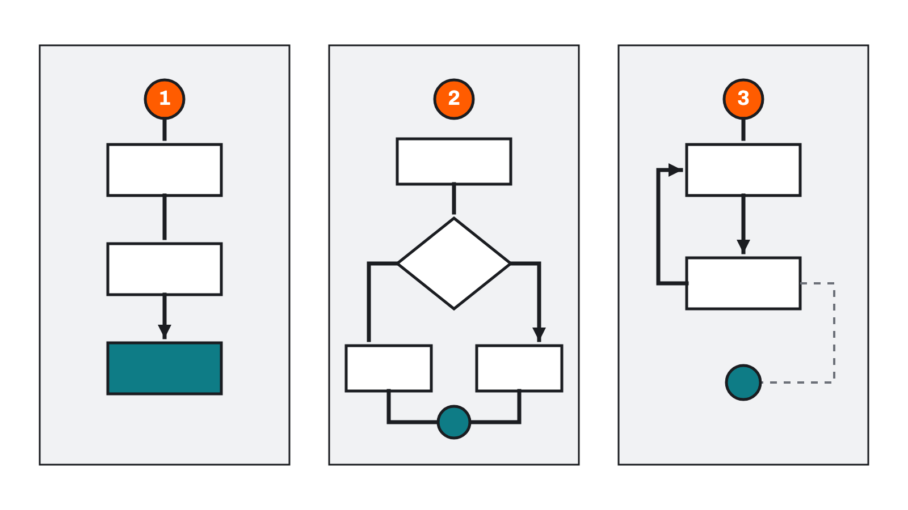
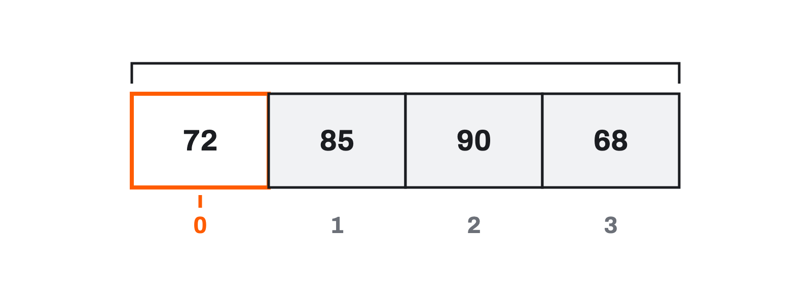

코드의 흐름과
오류 읽기读懂代码的
流程与报错
그 넷이 모두 든 코드 하나를 끝까지 읽고 검증합니다.把条件、循环、函数、数据结构逐个掌握之后，
再把四者齐备的一段代码从头读到尾并加以验证。
프로그램은 늘 같은 일만 하지 않는다程序并不总是做同一件事
학교 누리집에 로그인합니다. 비밀번호가 맞으면 내 화면으로 넘어가고, 틀리면 “비밀번호를 확인하세요”가 뜹니다. 세 번 틀리면 아예 잠깁니다.登录学校网站。密码对了就进入我的页面，错了就弹出“请确认密码”。错三次就直接锁定。
같은 버튼을 눌렀는데 결과가 매번 다릅니다. 그런데 프로그램은 하나입니다. 누군가 옆에서 지켜보다가 상황에 맞게 바꿔 주는 것도 아닙니다.按的是同一个按钮，结果却每次不同。可程序只有一个，也没有谁在旁边盯着、随机应变地替它改。
지금까지 우리가 쓴 코드는 위에서 아래로 한 번씩만 실행됐습니다. 그런 코드로는 이 로그인 화면을 만들 수 없습니다. 무엇이 더 필요할까요?到目前为止我们写的代码，都是从上到下各执行一次。用那样的代码做不出这个登录界面。还缺什么呢？
프로그램은 상황에 따라 다른 일을 하고, 같은 일을 반복하며,
여러 값을 정리하고, 문제가 생긴 위치를 어떻게 알려 줄까?程序如何依情况做不同的事、如何重复同一件事、
如何整理多个值，又如何告诉我们问题出在哪里？
- 비교의 결과는
True또는False라는bool값이다. (3-1)比较的结果是True或False，即bool值。（3-1） =는 대입,==는 비교다. (3-1)=是赋值，==是比较。（3-1）- 값 하나하나에
price,count처럼 이름을 붙여 계산했다. (3-1)我们给每一个值起了price、count这样的名字来计算。（3-1） - 그러나 실행된다는 것과 맞다는 것은 다르다. ‘175시간 학습’은 오류 없이 출력되었다. (3-1)但能运行和对，是两回事。“175 小时学习”是没报错就输出来的。（3-1）
이번 차시에서 그 자리를 채웁니다. True·False를 만들 줄만 알았지 그것으로 무엇을 할지는 아직 배우지 않았습니다. 오늘 배울 조건문이 바로 그 자리입니다. 여기에 더해 같은 일을 여러 번 하는 반복문, 코드를 묶어 이름 붙이는 함수, 여러 값을 정리하는 자료구조를 함께 봅니다.这一课时来补上那个位置。我们只会造出 True·False，还没学拿它来做什么。今天要学的条件语句正是那个位置。此外还会一并看：把同一件事做很多遍的循环、把代码打包起名的函数，以及整理多个值的数据结构。
코드가 실행되는 순서代码执行的顺序 핵심核心
앞에서 작성한 계산 코드는 각 줄을 위에서 아래로 한 번씩 실행했습니다. 하지만 실제 프로그램은 그렇지 않습니다.前面写的计算代码，每一行都是从上到下各执行一次。但真实的程序不是这样。
- 비밀번호가 맞으면 로그인하고, 틀리면 다시 입력하게 한다. → 갈라진다密码对就登录，错就让重新输入。→ 分岔
- 여러 날의 사용 시간을 하나씩 더한다. → 되돌아온다把多天的使用时间一个个加起来。→ 折返
- 같은 계산을 여러 곳에서 다시 사용한다. → 불러 쓴다同一个计算在好几处再次使用。→ 调用
- 이름과 점수처럼 관계있는 데이터를 함께 보관한다. → 묶는다把姓名和分数这类相关的数据放在一起保管。→ 打包
- 현상现象
- 보드게임 말판을 생각해 보세요. 보통은 앞으로 한 칸씩 가지만, 어떤 칸에서는 “주사위가 짝수면 지름길로”라고 하고, 또 어떤 칸에서는 “처음으로 돌아가시오”라고 합니다.想想棋盘游戏。通常一格一格往前走，但有的格子写着“骰子是偶数就走捷径”，还有的格子写着“回到起点”。
- 쉬운 설명通俗说法
- 코드의 어느 줄이 어떤 순서로 실행되는지를 말합니다.它指的是代码哪一行、按什么顺序被执行。
- 정확한 정의准确定义
- 프로그램에서 명령이 실행되는 순서. 순차·선택·반복의 세 가지 기본 구조로 조직된다.程序中命令被执行的顺序。由顺序、选择、循环这三种基本结构组织而成。
- 경계边界
- 코드가 적힌 순서와 실행되는 순서는 다를 수 있습니다. 2-1에서 Notebook 셀의 실행 순서를 조심하라고 했던 것과 같은 종류의 이야기입니다.代码写下的顺序和被执行的顺序可能不同。这和 2-1 提醒过“当心 Notebook 单元格的运行顺序”是同一类事。
- 문장 속 사용例句
- “이 함수 안에서 실행 흐름이 조건문에서 갈라진다.”“在这个函数里，执行流程在条件语句处分岔。”
코드가 실행되는 순서代码执行的顺序 핵심核心(이어서)（续）

조건문, 반복문과 함수는 실행 흐름을 조직하는 대표적인 도구입니다. 이 차시의 나머지는 이 도구들을 하나씩 살펴봅니다.条件语句、循环和函数是组织执行流程的代表性工具。本课时余下的部分就逐个来看这些工具。
리스트와 튜플은 여러 값을 순서대로 담는다列表和元组按顺序装多个值 핵심核心
흐름을 다루기 전에 다룰 값부터 정리해야 합니다. 3-1에서는 값마다 변수를 하나씩 만들었습니다. 다섯 개면 괜찮지만 서른 개라면 곤란합니다.在处理流程之前，得先把要处理的值理清楚。3-1 里我们给每个值都建了一个变量。五个还好，三十个就不行了。
monday_minutes = 40
tuesday_minutes = 55
wednesday_minutes = 30
thursday_minutes = 70
friday_minutes = 45여러 값을 하나의 이름으로 순서대로 모아 관리하는 방법이 있습니다. 리스트(list)와 튜플(tuple)입니다.有一种办法能用一个名字按顺序收拢多个值来管理，那就是列表（list）和元组（tuple）。
daily_minutes = [40, 55, 30, 70, 45] # 리스트 — 대괄호
screen_size = (1920, 1080) # 튜플 — 소괄호| 구분项目 | 리스트 list列表 list | 튜플 tuple元组 tuple |
|---|---|---|
| 괄호括号 | 대괄호 [ ]方括号 [ ] | 소괄호 ( )圆括号 ( ) |
| 공통점共同点 | 여러 값을 순서대로 담는다都按顺序装多个值 | |
| 값의 변경值的改动 | 만든 뒤 추가·삭제·변경할 수 있다建好之后可以增删改 | 만든 뒤 각 값을 변경할 수 없다建好之后不能改动其中的值 |
| 주된 쓰임主要用途 | 계속 달라지는 값을 모아 관리할 때管理会不断变化的一批值 | 함께 전달하거나 바뀌지 않을 값을 묶을 때把要一起传递、或不会变的值打包 |
리스트와 튜플은 여러 값을 순서대로 담는다列表和元组按顺序装多个值 핵심核心(이어서)（续）
화면 해상도 (1920, 1080)을 생각해 보세요. 가로와 세로는 한 짝으로 다녀야 의미가 있고, 중간에 누가 한쪽만 바꿔 버리면 곤란합니다. 튜플은 “이건 바뀌면 안 되는 묶음이다”라는 의도를 코드로 표현하는 장치입니다.想想屏幕分辨率 (1920, 1080)。宽和高得成对出现才有意义，中途谁只改了一个就麻烦了。元组是用代码表达“这是不该被改动的一组”这个意图的装置。
이번 학기에 리스트나 튜플을 처음부터 설계할 일은 많지 않습니다. 그러나 AI가 만든 코드에서 [ ]를 보면 리스트, ( )를 보면 튜플이라고 알아보고, 값이 바뀌는 자료인지 고정된 묶음인지 구분할 수 있어야 합니다.这个学期你不太会从零设计列表或元组。但在 AI 写的代码里，看到 [ ] 要认出是列表，看到 ( ) 要认出是元组，并能分辨它是会变的数据还是固定的一组。
위치 번호는 1이 아니라 0부터位置编号不是从 1，而是从 0 开始 핵심核心
리스트와 튜플 모두 각 자리에 위치 번호가 붙습니다. 그런데 그 번호가 1이 아니라 0에서 시작합니다. 처음 배울 때 가장 많이 헷갈리는 지점입니다.列表和元组的每个位置都带位置编号。可这个编号不是从 1，而是从 0 开始。这是初学时最容易搞混的地方。

daily_minutes = [40, 55, 30, 70, 45]
print(daily_minutes[0]) # 40 ← 첫 번째
print(screen_size[1]) # 1080 ← 두 번째위치 번호는 1이 아니라 0부터位置编号不是从 1，而是从 0 开始 핵심核心(이어서)（续）
daily_minutes[5]를 쓰면 어떻게 될까?在只有五个值的列表里写 daily_minutes[5] 会怎样？해설 보기查看解析
오류가 납니다. 위치 번호는 0·1·2·3·4까지만 있고 5번 자리는 없기 때문입니다. 오류 이름은 IndexError입니다.会报错。因为位置编号只有 0·1·2·3·4，没有第 5 号位置。报错名称是 IndexError。
값이 다섯 개인데 마지막 번호가 4라는 점이 처음엔 어색합니다. “개수 − 1이 마지막 번호”로 외워 두면 편합니다.明明有五个值，最后一个编号却是 4，一开始会觉得别扭。记成 “个数 − 1 就是最后一个编号”比较方便。
위치 번호를 “맨 앞에서 몇 칸 떨어져 있는가”로 읽으면 자연스러워집니다. 첫 번째 값은 맨 앞에서 0칸 떨어져 있고, 두 번째 값은 1칸 떨어져 있습니다.把位置编号读作“离最前面隔了几格”就自然了。第一个值离最前面隔了 0 格，第二个值隔了 1 格。
이 방식은 Python만의 규칙이 아닙니다. C, Java, JavaScript 등 대부분의 언어가 0부터 셉니다. 10회 이후 JavaScript를 만날 때도 같은 규칙이 나옵니다.这不是 Python 独有的规则。C、Java、JavaScript 等大多数语言都从 0 数起。第 10 次课以后遇到 JavaScript 时，也是同样的规则。
조건에 따라 실행할 코드를 고른다依条件挑出要执行的代码 핵심核心
- 현상现象
- 지하철 개찰구는 카드를 대면 잔액을 보고 문을 열거나 “잔액 부족”을 띄웁니다. 하나의 기계가 두 가지 결과를 냅니다.地铁闸机在你刷卡时会看余额，然后开门或显示“余额不足”。一台机器给出两种结果。
- 쉬운 설명通俗说法
- 어떤 조건이 참일 때만 특정 코드를 실행하도록 갈래를 만드는 문장입니다.它是造出分岔、让某段代码只在条件为真时执行的语句。
- 정확한 정의准确定义
- 조건식의 참·거짓 결과에 따라 실행할 코드 블록을 선택하는 제어 구조.依据条件表达式的真假结果，选择要执行的代码块的控制结构。
- 경계边界
- 조건문은 고르는 것이지 기다리는 것이 아닙니다. 조건이 거짓이면 그 갈래를 건너뛰고 지나갈 뿐, 참이 될 때까지 멈춰 서지 않습니다.条件语句是挑选，不是等待。条件为假就跳过那一支继续往下，而不会停在原地等它变真。
- 문장 속 사용例句
- “음수인지 검사하는 조건문을 앞에 두었다.”“我把检查是否为负数的条件语句放在了前面。”
minutes = 95
if minutes <= 120:
print("정한 범위 안입니다.")
else:
print("정한 범위를 넘었습니다.")조건에 따라 실행할 코드를 고른다依条件挑出要执行的代码 핵심核心(이어서)（续）
minutes <= 120이라는 비교의 결과는 3-1에서 배운 대로 True 또는 False입니다. True이면 if 아래가, False이면 else 아래가 실행됩니다. 드디어 bool 값이 쓰이는 자리를 만났습니다.minutes <= 120 这个比较的结果，正如 3-1 学过的，是 True 或 False。为 True 就执行 if 下面的，为 False 就执行 else 下面的。我们终于见到 bool 值派上用场的地方了。
들여쓰기가 소속을 정한다缩进决定归属
Python은 들여쓰기로 어떤 코드가 조건문 안에 속하는지 구분합니다. 다른 언어에서 중괄호가 하는 일을 Python에서는 여백이 합니다.Python 用缩进来区分哪段代码属于条件语句内部。别的语言用花括号做的事，Python 用空白来做。
if minutes <= 120:
print("범위 안")
print("기록을 저장합니다.")두 print가 같은 만큼 들여쓰기 되어 있으므로 둘 다 조건이 참일 때만 실행됩니다. 둘째 줄의 들여쓰기를 지우면 조건과 상관없이 항상 실행되는 코드로 뜻이 바뀝니다.两个 print 缩进的量相同，所以两行都只在条件为真时执行。把第二行的缩进去掉，含义就变成无论条件如何都总会执行的代码。
보기 좋으라고 넣은 여백이 아니라 문법의 일부입니다. 잘못되면 IndentationError가 납니다.它不是为了好看而加的空白，而是语法的一部分。弄错就会报 IndentationError。
elif 와 조건의 순서elif 与条件的顺序 핵심核心
갈래가 셋 이상이면 elif를 씁니다. 3-1에서 “실행은 되지만 뜻이 틀린 값”을 이야기했습니다. 음수로 들어온 학습 시간이 바로 그런 값입니다.分支在三个以上时用 elif。3-1 里说过“能运行但含义是错的值”。以负数进来的学习时间，正是这种值。
if minutes < 0:
print("시간은 음수가 될 수 없습니다.")
elif minutes <= 120:
print("정한 범위 안입니다.")
else:
print("정한 범위를 넘었습니다.")위에서부터 조건을 검사하다가 처음으로 참이 된 한 갈래만 실행하고 나머지는 건너뜁니다. 그래서 조건을 적는 순서가 결과를 바꿉니다.从上往下检查条件，只执行第一个为真的那一支，其余全部跳过。所以写条件的顺序会改变结果。
minutes = -10일 때 무엇이 출력될까?把前两个条件的顺序对调，minutes = -10 时会输出什么？해설 보기查看解析
순서를 바꾸면 elif minutes <= 120이 먼저 검사됩니다. -10 <= 120은 참이므로 “정한 범위 안입니다.”가 출력되고, 음수를 잡아내려던 조건은 영영 실행되지 않습니다.对调之后先检查 elif minutes <= 120。-10 <= 120 为真，于是输出“정한 범위 안입니다.”（在设定范围内。），而本想抓负数的那个条件永远不会被执行。
코드는 오류 없이 잘 돌아갑니다. 그런데 하려던 일을 못 합니다. 이런 것이 뒤에서 배울 논리 오류입니다.代码没报错，跑得好好的，却没做成想做的事。这类问题就是后面要学的逻辑错误。
위의 함정을 피하는 요령은 더 좁고 특수한 조건을 앞에 두는 것입니다. “음수인가?”는 “120 이하인가?”보다 좁은 조건입니다. 넓은 조건을 앞에 두면 좁은 조건이 가려집니다.避开上面那个坑的诀窍，是把更窄、更特殊的条件放在前面。“是不是负数？”比“是不是 120 以下？”要窄。把宽的条件放前面，窄的条件就被挡住了。
elif 와 조건의 순서elif 与条件的顺序 핵심核心(이어서)（续）
학습 시간에 -10분이 들어와도, 검사하는 코드가 없으면 계산은 그대로 됩니다. 이제는 검사를 넣을 수 있습니다. 다만 넣기만 하면 되는 것이 아니라 순서까지 맞아야 한다는 것이 오늘 새로 배운 점입니다. 잘못된 입력을 실제로 걸러 내는 방법은 뒤의 테스트 차시에서 본격적으로 다룹니다.学习时间里进来 -10 分，只要没有检查的代码，计算照样会做。现在能加上检查了。不过今天新学到的是：光加上还不够，顺序也得对。真正把错误输入过滤掉的做法，要到后面的测试课时才正式讲。
if·elif·else가 각각 언제 실행되는지 한 문장으로 설명해 보세요. “처음으로”라는 낱말을 꼭 넣어 보세요.请用一句话说明 if·elif·else 各在什么时候执行。一定要把“第一个”这个词放进去。
여러 값에 같은 처리를 적용한다对多个值施加同样的处理 핵심核心
- 현상现象
- 시험지를 걷을 때 앞줄부터 한 명씩 “이름 확인 → 받기”를 되풀이합니다. 사람마다 다른 일을 하는 것이 아니라 같은 일을 사람 수만큼 합니다.收试卷时，从第一排开始一个一个地重复“核对姓名 → 收上来”。不是每人做不同的事，而是同一件事做人数那么多遍。
- 쉬운 설명通俗说法
- 값을 하나씩 꺼내면서 같은 코드를 되풀이하는 문장입니다.它是一边把值一个个取出来、一边反复执行同一段代码的语句。
- 정확한 정의准确定义
- 주어진 값의 모음에서 값을 차례로 꺼내 같은 코드 블록을 반복 실행하는 제어 구조.从给定的值的集合中依次取值，反复执行同一代码块的控制结构。
- 경계边界
- 같은 코드가 여러 번 실행되지만, 매번 다루는 값은 다릅니다. 코드는 하나이고 값이 바뀝니다.同一段代码执行多次，但每次处理的值不同。代码只有一份，变的是值。
- 문장 속 사용例句
- “리스트를 도는 반복문 안에서 합계를 쌓았다.”“在遍历列表的循环里累加了合计。”
daily_minutes = [40, 55, 30, 70, 45]
for minutes in daily_minutes:
print(minutes)minutes는 지금 꺼낸 값을 가리키는 이름입니다. 반복할 때마다 이 이름이 가리키는 값이 바뀝니다. 3-1에서 “변수는 값을 가리키는 이름표”라고 했던 그림이 여기서 그대로 쓰입니다.minutes 是指向当前取出的值的名字。每循环一次，这个名字所指的值就变。3-1 说“变量是指向值的名牌”，那幅图在这里原样用得上。
여러 값에 같은 처리를 적용한다对多个值施加同样的处理 핵심核心(이어서)（续）
40을 minutes에 넣고 출력
→ 55를 minutes에 넣고 출력
→ 30을 minutes에 넣고 출력
→ 70을 minutes에 넣고 출력
→ 45를 minutes에 넣고 출력
→ 더 꺼낼 값이 없으면 반복 종료조건문과 마찬가지로 들여쓰기가 반복 안에 속하는 코드를 정합니다. 들여쓰기를 지우면 반복이 다 끝난 뒤 한 번만 실행됩니다.和条件语句一样，缩进决定哪段代码属于循环内部。去掉缩进，它就变成循环全部结束后只执行一次。
while 반복문更深一层 — while 循环 확장拓展for는 여러 값을 하나씩 처리할 때 씁니다. while은 조건이 참인 동안 반복합니다.for 用在把多个值一个个处理的时候。while 则是在条件为真期间反复。
while은 종료 조건을 잘못 만들면 끝나지 않는 반복이 되어 프로그램이 멈추지 않습니다. 그래서 이번 학기 실습에서는 for를 중심으로 씁니다. “이런 것도 있다” 정도로 알아 두세요.while 的结束条件写错就会变成停不下来的循环，程序不会终止。所以本学期实践以 for 为主。知道“还有这么个东西”就行。
반복하면서 값을 쌓기一边循环一边累积 핵심核心
반복문의 진짜 쓸모는 결과를 모아 가는 데 있습니다. 3-1에서 +로 하나씩 더했던 합계를 반복문으로 만들어 보겠습니다.循环真正的用处在于把结果攒起来。3-1 里用 + 一个个相加得到的合计，我们用循环来做一遍。
total = 0
for minutes in daily_minutes:
total = total + minutes
print(total)여기서 total = total + minutes가 처음 보면 이상합니다. 수학이라면 성립할 수 없는 식입니다. 그러나 3-1에서 배운 대로 =는 대입입니다. “지금 total에 minutes를 더한 값을 다시 total이라는 이름에 넣어라”라는 뜻입니다.这里的 total = total + minutes 初看很怪。在数学里这个式子不成立。但正如 3-1 学过的，= 是赋值，意思是“把此刻 total 加上 minutes 的结果，重新放进 total 这个名字里”。
반복하면서 값을 쌓기一边循环一边累积 핵심核心(이어서)（续）
한 칸씩 따라가 보기一格一格跟着走
지금 minutes当前 minutes | 계산计算 | 실행 뒤 total执行后的 total |
|---|---|---|
| 시작 전开始前 | — | 0 |
| 40 | 0 + 40 | 40 |
| 55 | 40 + 55 | 95 |
| 30 | 95 + 30 | 125 |
| 70 | 125 + 70 | 195 |
| 45 | 195 + 45 | 240 |
앞에서 손으로 구한 240과 같습니다. 이렇게 한 줄씩 표로 따라가 보는 것이 반복문을 읽는 가장 확실한 방법이며, 오늘 뒤쪽 실습에서 직접 해 봅니다.和前面手算出的 240 一致。像这样一行一行做成表来跟，是读循环最靠得住的方法，今天后面的实践里会亲手做一次。
total = 0이 반복문 밖에 있는 이유total = 0 为什么在循环外面안에 넣으면 반복할 때마다 total이 0으로 되돌아가서 마지막 값만 남습니다. 쌓을 그릇은 반복이 시작되기 전에 한 번만 준비해야 합니다.放到里面的话，每循环一次 total 就被清回 0，最后只剩下最后一个值。用来盛放的容器，必须在循环开始之前只准备一次。
Python에는 sum(daily_minutes)처럼 합계를 한 번에 구하는 기능도 있습니다. 그래도 과정을 펼쳐 본 것은 반복문의 흐름을 이해하기 위해서입니다.Python 里也有 sum(daily_minutes) 这种一步求和的功能。之所以还要把过程摊开来做，是为了理解循环的流程。
이름을 붙여 다시 쓰는 코드起个名字、可以反复使用的代码 핵심核心
같은 계산을 여러 번 적으면 고칠 곳도 여러 곳이 됩니다. 특정 작업을 하나로 묶고 이름을 붙인 것을 함수라고 합니다.同一个计算写好几遍，要改的地方也就有好几处。把某项工作打包成一个整体并起个名字，这就叫函数。
- 현상现象
- 자판기에 동전을 넣고 버튼을 누르면 음료가 나옵니다. 안에서 무슨 일이 일어나는지 몰라도 넣는 것과 나오는 것만 알면 쓸 수 있습니다.往自动售货机投币按下按钮，饮料就出来了。不知道里面发生了什么，只要知道放进去什么和出来什么，就能用。
- 쉬운 설명通俗说法
- 값을 받아 정해진 일을 하고 결과를 돌려주는, 이름 붙인 코드 묶음입니다.它是接收值、做既定的事、再把结果送回来的带名字的代码包。
- 정확한 정의准确定义
- 입력을 받아 정해진 처리를 수행하고 결과를 반환하도록 이름을 붙여 정의한 코드 단위.接收输入、执行既定处理并返回结果，为此起名定义的代码单位。
- 경계边界
- 함수를 정의하는 것과 호출하는 것은 다릅니다. 정의만 해 두면 아무 일도 일어나지 않습니다. 자판기를 설치한 것과 음료를 뽑는 것의 차이입니다.定义函数和调用函数是两回事。只定义不调用，什么也不会发生。就像装好自动售货机和真的买一瓶饮料的差别。
- 문장 속 사용例句
- “분을 시간으로 바꾸는 함수를 만들어 두고 세 곳에서 불러 썼다.”“我做了一个把分钟换成小时的函数，在三个地方调用它。”
def minutes_to_hours(minutes):
hours = minutes / 60
return hours이름을 붙여 다시 쓰는 코드起个名字、可以反复使用的代码 핵심核心(이어서)（续）
| 부분部分 | 코드代码 | 뜻含义 |
|---|---|---|
| 함수 이름函数名 | minutes_to_hours | 함수가 하는 일을 나타낸다.表示这个函数做什么。 |
| 매개변수形参 | minutes | 함수가 처리할 값을 받는다.接收函数要处理的值。 |
| 반환값返回值 | return hours | 결과를 호출한 곳으로 돌려준다.把结果送回调用它的地方。 |
함수를 정의한 것만으로는 계산이 실행되지 않습니다. 호출해야 합니다.光定义函数，计算并不会发生。必须调用。
result = minutes_to_hours(150)
print(result) # 2.5이름을 붙여 다시 쓰는 코드起个名字、可以反复使用的代码 핵심核心(이어서)（续）
print와 return은 다르다print 和 return 不一样 핵심核心
둘 다 “결과를 내놓는” 것처럼 보이지만 역할이 완전히 다릅니다. 여기를 혼동하면 오늘 뒤쪽 실습의 코드가 읽히지 않습니다.两者看着都像“交出结果”，作用却完全不同。这里混淆了，今天后面实践的代码就读不下去。
print — 사람에게 보여 준다print — 给人看값을 화면에 표시합니다. 사람이 읽으라고 내놓는 것입니다.把值显示在屏幕上。是拿出来给人读的。
화면에 나타났을 뿐, 그 값을 다른 코드가 다시 쓸 수는 없습니다.它只是出现在屏幕上，别的代码没法再拿它来用。
return — 코드에게 돌려준다return — 交还给代码결과를 호출한 곳으로 돌려줍니다. 사람 눈에는 아무것도 보이지 않습니다.把结果送回调用处。人眼什么也看不到。
돌려받은 값은 변수에 담거나 다시 계산에 쓸 수 있습니다.收回来的值可以装进变量，也可以继续参与计算。
def show_hours(minutes):
print(minutes / 60) # 화면에 보여 주기만 한다
result = show_hours(150) # 화면에는 2.5 가 나오지만
print(result) # result 에는 None 이 들어 있다2.5가 분명히 나왔는데 result는 왜 None일까?屏幕上明明出现了 2.5，为什么 result 是 None？해설 보기查看解析
print는 보여 주기만 하고 아무것도 돌려주지 않기 때문입니다. 돌려줄 값이 없는 함수는 None(값이 없음)을 돌려줍니다.因为 print 只负责显示，什么也不返回。没有可返回值的函数会返回 None（没有值）。
화면에 보이는 것과 코드가 손에 쥔 것은 다릅니다. 계산 결과를 이어서 쓰려면 반드시 return이 필요합니다.屏幕上看到的东西，和代码手里握着的东西，不是一回事。要把计算结果接着用下去，就必须有 return。
뒤에서 읽을 코드는 함수 안에서는 return으로 결과를 돌려주고, 출력은 함수 밖에서 print로 합니다. 계산하는 부분과 보여 주는 부분을 나누어 두는 방식이며, 실제 개발에서도 널리 쓰는 구조입니다.后面要读的代码是函数内部用 return 交回结果，输出则在函数外用 print。这是把计算的部分和展示的部分分开的做法，实际开发中也广泛使用。
이름표와 값을 짝지어 저장한다把名牌和值配成对来保存 핵심核心
리스트와 튜플이 값을 순서대로 담는다면, 딕셔너리(dictionary)는 이름과 값을 짝지어 담습니다.如果说列表和元组是按顺序装值，那么字典（dictionary）就是把名字和值配成对来装。
- 현상现象
- 학생증에는 이름, 학번, 학과가 적혀 있습니다. “두 번째 칸”이라고 부르지 않고 “학번”이라고 불러서 찾습니다.学生证上写着姓名、学号、院系。我们不会说“第二格”，而是说“学号”去找它。
- 쉬운 설명通俗说法
- 값마다 이름표(키)를 붙여 저장하고, 그 이름으로 값을 꺼내는 자료구조입니다.它是给每个值贴上名牌（键）来保存、再用那个名字把值取出来的数据结构。
- 정확한 정의准确定义
- 키(key)와 값(value)의 짝으로 자료를 저장하고, 키를 이용해 값을 찾는 자료구조.以键（key）与值（value）成对的方式保存数据，并利用键来查找值的数据结构。
- 경계边界
- 리스트·튜플은 위치 번호로 찾고, 딕셔너리는 키로 찾습니다. 그래서 딕셔너리에서는 순서보다 이름이 중요합니다.列表和元组用位置编号查找，字典用键查找。所以在字典里，名字比顺序更重要。
- 문장 속 사용例句
- “함수가 계산 결과를 딕셔너리로 묶어 반환했다.”“函数把计算结果打包成字典返回了。”
record = {
"name": "가상 학생",
"total_minutes": 240,
"completed": True,
}이름표와 값을 짝지어 저장한다把名牌和值配成对来保存 핵심核心(이어서)（续）
print(record["name"]) # 가상 학생
print(record["completed"]) # Truerecord[1]이라면 무엇을 꺼내는지 알 수 없지만 record["total_minutes"]는 읽는 것만으로 뜻이 통합니다. 3-1에서 “이름을 잘 짓는 것도 실력”이라고 했던 이야기가 자료구조 차원으로 넓어진 것입니다.写 record[1] 看不出取的是什么，而 record["total_minutes"] 光读就明白意思。3-1 说“起好名字也是本事”，这句话在数据结构的层面上被放大了。
그래서 결과가 여러 개일 때 딕셔너리로 묶어 돌려주는 방식을 자주 씁니다. 오늘 실습에서 읽을 코드가 정확히 그렇게 되어 있습니다.所以结果有好几项时，常用字典打包返回。今天实践要读的代码正是这么写的。
세 자료구조를 한자리에三种数据结构放在一起看 핵심核心
| 구분项目 | 리스트 [ ]列表 [ ] | 튜플 ( )元组 ( ) | 딕셔너리 { }字典 { } |
|---|---|---|---|
| 담는 방식装的方式 | 순서대로按顺序 | 순서대로按顺序 | 키와 값의 짝으로以键与值成对 |
| 값을 찾을 때取值时用 | 위치 번호位置编号 | 위치 번호位置编号 | 키 이름键名 |
| 값 변경改动值 | 가능可以 | 불가능不可以 | 가능可以 |
| 이럴 때 쓴다这种时候用 | 같은 종류가 여러 개同一类东西有很多个 | 바뀌면 안 되는 묶음不该被改动的一组 | 종류가 다른 값을 이름으로 묶을 때把含义不同的值用名字打包时 |
| 예例 | [40, 55, 30] | (1920, 1080) | {"total": 240} |
언제 무엇을 쓰는지 감 잡기摸清什么时候用什么
5일치 사용 시간처럼 같은 뜻의 값이 여러 개일 때. 반복문으로 하나씩 처리하기 좋습니다.像五天的使用时间那样，含义相同的值有多个时。适合用循环一个个处理。
가로·세로처럼 한 짝으로 다녀야 하고 바뀌면 안 되는 값일 때.像宽 · 高那样必须成对出现、且不该被改动的值。
합계·달성일수처럼 뜻이 서로 다른 결과를 이름표를 붙여 묶을 때.像合计 · 达标天数那样，把含义各不相同的结果贴上名牌打包时。
해설 보기查看解析
딕셔너리입니다. 두 값은 뜻이 서로 달라서 위치 번호로 구분하면 “0번이 합계였나 달성 일수였나?”를 계속 기억해야 합니다. result["total"], result["goal_days"]처럼 이름으로 꺼내면 헷갈릴 일이 없습니다.用字典。这两个值含义不同，若用位置编号来区分，就得一直记着“0 号是合计还是达标天数？”。写成 result["total"]、result["goal_days"] 用名字取，就不会混。
오늘 실습에서 읽을 코드가 바로 이 방식을 씁니다.今天实践要读的代码用的正是这种方式。
오류 메시지는 문제를 찾기 위한 기록이다报错信息是用来找问题的记录 확장拓展
개발자가 오류를 찾을 때 참고하는 내용입니다. 오류의 종류를 외우거나 직접 수정할 필요는 없습니다. AI가 만든 코드를 실행했을 때 오류 메시지가 나타나면, 그것이 문제가 생긴 위치와 원인을 알려 주는 정보라는 점만 알아 두면 됩니다.这是开发者排错时参考的内容。不需要背下报错的种类，也不需要自己去修。只要知道：运行 AI 写的代码时若出现报错信息，那是告诉你问题发生的位置与原因的信息，就够了。
오류가 나면 프로그램 전체를 지우거나 무작정 AI에게 “다시 만들어 줘”라고 하기 쉽습니다. 그 전에 메시지를 읽습니다. 2-2에서 “오류는 고장 신호가 아니라 안내문”이라고 했던 그 안내문입니다.一报错，人容易把整个程序删掉，或者不管三七二十一地让 AI“再做一遍”。在那之前，先读信息。这就是 2-2 说的“报错不是故障信号，而是说明书”里的那份说明书。
Python 오류 메시지에는 보통 다음 세 가지가 들어 있습니다.Python 的报错信息通常包含以下三样。
오류 메시지는 길어서 처음 보면 겁이 납니다. 그러나 가장 중요한 정보는 맨 마지막 줄에 있습니다. 위쪽은 “여기까지 어떻게 왔는지”의 기록이고, 맨 아래가 “무엇이 문제인지”입니다.报错信息很长，第一次看会发怵。但最重要的信息在最后一行。上面是“怎么走到这里”的记录，最下面才是“问题是什么”。
2-2에서 NameError를 만났을 때도 마지막 부분을 읽었습니다. 같은 방법입니다.2-2 遇到 NameError 时，我们读的也是最后那部分。方法是一样的。
자주 만나는 오류常见的报错 확장拓展
외울 필요는 없습니다. 오류를 만났을 때 이 표를 찾아보라는 뜻으로 실어 둡니다.不用背。放在这里是想说：遇到报错时回来查这张表。
| 오류 이름报错名称 | 주로 뜻하는 것通常意味着 | 먼저 확인할 점先确认的地方 |
|---|---|---|
SyntaxError | Python 문법을 해석할 수 없음无法解析 Python 语法 | 괄호, 따옴표, 콜론 :括号、引号、冒号 : |
IndentationError | 들여쓰기 구조가 잘못됨缩进结构不正确 | 조건·반복·함수 안의 들여쓰기条件、循环、函数内部的缩进 |
NameError | 사용한 이름을 찾지 못함找不到所用的名字 | 변수·함수 이름의 철자와 실행 순서变量、函数名的拼写与执行顺序 |
TypeError | 맞지 않는 자료형끼리 연산함在不匹配的数据类型之间做了运算 | 숫자와 문자열의 혼합数字与字符串混用 |
IndexError | 리스트에 없는 위치를 요청함请求了列表中不存在的位置 | 리스트 길이와 위치 번호列表长度与位置编号 |
KeyError | 딕셔너리에 없는 키를 요청함请求了字典中不存在的键 | 키 이름의 철자와 존재 여부键名的拼写与是否存在 |
표를 다시 보세요. 들여쓰기를 배웠더니 IndentationError가, 리스트의 위치 번호를 배웠더니 IndexError가, 딕셔너리의 키를 배웠더니 KeyError가 나옵니다.再看一遍这张表。学了缩进，就出现 IndentationError；学了列表的位置编号，就出现 IndexError；学了字典的键，就出现 KeyError。
3-1에서 TypeError 메시지에 int와 str이 그대로 적혀 있는 것을 보고 “용어를 알면 오류가 읽힌다”라고 했습니다. 오늘 배운 개념들도 똑같이 오류 메시지 안에서 다시 만나게 됩니다.3-1 里我们看到 TypeError 的信息里原样写着 int 和 str，当时说“懂了术语，报错就读得懂”。今天学的这些概念，也会同样在报错信息里再次见到。
같은 TypeError라도 코드에 따라 원인이 다를 수 있습니다. 오류 이름만 보고 결론짓지 말고 오류가 난 줄과 그때의 입력값을 함께 봐야 합니다.同样是 TypeError，因代码而异，原因可能不同。不要只看报错名称就下结论，要连出错的那一行和当时的输入值一起看。
실행 오류와 논리 오류는 다르다运行错误与逻辑错误不一样 핵심核心
직접 오류를 찾아 고치는 활동은 하지 않습니다. 코드가 실행된다는 사실만으로 결과까지 항상 옳은 것은 아니라는 점을 이해하기 위한 내용입니다.这里不做自己找错并修好的活动。这部分内容是为了理解：代码能跑起来，并不代表结果总是对的。
다음 코드는 오류 메시지 없이 잘 실행됩니다.下面这段代码不会报错，跑得好好的。
scores = [80, 90, 100]
average = sum(scores) / 2
print(average)135.0값이 세 개인데 2로 나누었습니다. 그래서 답이 틀렸습니다. 그런데 Python은 아무 말도 하지 않습니다. 2로 나누는 것은 문법적으로 완전히 정상이기 때문입니다.明明有三个值，却除以了 2。所以答案是错的。可 Python 一声不吭。因为除以 2 在语法上完全正常。
이렇게 코드는 실행되지만 의도와 다른 결과를 만드는 문제를 논리 오류(logic error)라고 합니다.像这样代码能跑、却产出与意图不符的结果的问题，叫做逻辑错误（logic error）。
프로그램이 멈춘다. 오류 메시지가 위치와 원인을 알려 준다.程序停下来。报错信息会告诉你位置与原因。
발견하기 쉽다. 안 고치면 아예 동작하지 않으니까.容易发现。不修就根本跑不动。
프로그램이 잘 돌아간다. 아무도 알려 주지 않는다.程序跑得好好的。没有人来提醒你。
발견하기 어렵다. 그럴듯한 답이 나오므로 그대로 믿게 된다.难发现。因为出来的答案挺像样，你就信了。
실행 오류와 논리 오류는 다르다运行错误与逻辑错误不一样 핵심核心(이어서)（续）
오류 메시지가 알려 주지 않으므로, 사람이 예상 결과를 미리 만들어 두고 정상값뿐 아니라 경계값과 잘못된 입력을 시험해야 발견됩니다.报错信息不会提醒，所以必须由人先做出预期结果，并且不只测正常值，还要测边界值和错误输入才能发现。
3-1의 ‘175시간 학습’, 그리고 앞에서 본 ‘조건 순서를 바꾸면 음수 검사가 무력해지는’ 사례가 모두 논리 오류입니다. 이 관점은 13회 수행평가 3까지 이어집니다.3-1 的“175 小时学习”，以及前面看到的“对调条件顺序，负数检查就失效”，都是逻辑错误。这个视角一直延伸到第 13 次课的实作评价 3。
흔한 오해와 잘못된 설명常见的误解与错误说法
IndentationError가 납니다.在 Python 里缩进是语法的一部分。哪段代码属于条件、循环、函数内部，由空白决定。差一格含义就会变，或者报 IndentationError。[1]번이다.”“列表的第一个值是第 [1] 号。”[5]를 요청하면 IndexError가 납니다. “맨 앞에서 몇 칸 떨어졌는가”로 읽으면 자연스럽습니다.位置编号从 0 开始。有五个值编号就是 0~4，请求 [5] 会报 IndexError。读作“离最前面隔了几格”就自然了。if·elif는 위에서부터 검사해 처음 참이 된 하나만 실행합니다. 넓은 조건을 앞에 두면 뒤의 좁은 조건은 영영 실행되지 않습니다. 오류도 나지 않아 더 위험합니다.if·elif 从上往下检查，只执行第一个为真的那一支。把宽的条件放前面，后面窄的条件就永远轮不到。而且它还不报错，更危险。minutes_to_hours(150)처럼 호출해야 일어납니다. 자판기를 설치한 것과 음료를 뽑는 것의 차이입니다.定义只是准备。真正的计算要像 minutes_to_hours(150) 那样调用才会发生。就像装好自动售货机和真的买一瓶饮料的差别。흔한 오해와 잘못된 설명常见的误解与错误说法(이어서)（续）
print가 곧 함수의 결과다.”“print 就是函数的结果。”print는 화면에 보여 줄 뿐이고, 그 값을 다른 코드가 다시 쓸 수는 없습니다. 결과를 이어서 쓰려면 return이 필요합니다. return이 없는 함수는 None을 돌려줍니다.print 只是显示在屏幕上，别的代码没法再用那个值。要把结果接着用，就需要 return。没有 return 的函数返回 None。확인 문제检查题
다음 코드를 읽고 실행 전에 결과를 예상해 보세요. 오늘 배운 리스트·반복문·조건문이 모두 들어 있습니다.读下面的代码，在运行之前预测结果。今天学的列表、循环、条件语句都在里面。
daily_minutes = [30, 60, 90]
total = 0
for minutes in daily_minutes:
if minutes >= 60:
total = total + minutes
print(total)확인 문제检查题(이어서)（续）
해설 보기查看解析
리스트에 값이 세 개 있으므로 세 번 진행됩니다. 반복 횟수는 조건과 상관없이 리스트의 값 개수가 정합니다.列表里有三个值，所以进行三次。循环次数与条件无关，由列表的值的个数决定。
해설 보기查看解析
60과 90입니다. 30 >= 60은 거짓이므로 30일 때는 total에 더해지지 않고 그냥 지나갑니다.是 60 和 90。30 >= 60 为假，所以 30 时不会加进 total，直接略过。
해설 보기查看解析
두 값을 더한 150입니다. 한 칸씩 따라가면 이렇습니다.是两个值相加的 150。一格一格跟下来是这样。
지금 minutes当前 minutes | 조건 >= 60条件 >= 60 | 실행 뒤 total执行后的 total |
|---|---|---|
| 시작 전开始前 | — | 0 |
| 30 | 거짓 → 건너뜀假 → 跳过 | 0 |
| 60 | 참 → 더함真 → 相加 | 60 |
| 90 | 참 → 더함真 → 相加 | 150 |
확인 문제检查题(이어서)（续）(이어서)（续）
daily_minutes[3]을 출력하려 하면 어떤 문제가 생기는가?想输出 daily_minutes[3] 会出什么问题？해설 보기查看解析
위치 번호는 0·1·2까지만 있으므로 IndexError가 발생합니다. 값이 세 개면 마지막 번호는 2입니다.位置编号只到 0·1·2，所以会发生 IndexError。有三个值时最后一个编号是 2。
if minutes > 60:으로 한 글자 바꾸면 결과는?把条件改成 if minutes > 60:，只差一个字符，结果会怎样？해설 보기查看解析
90만 남습니다. 60 > 60은 거짓이기 때문입니다. >=와 >는 경계값에서만 차이가 나므로, 경계에 딱 걸리는 값을 넣어 보지 않으면 이 차이를 발견할 수 없습니다.只剩 90。因为 60 > 60 为假。>= 与 > 只在边界值上有差别，所以不放一个正好卡在边界上的值进去试，就发现不了这个差别。
이것도 오류 없이 통과하는 논리 오류입니다. 경계값 시험이 왜 필요한지 보여 주는 예입니다.这也是不报错就通过的逻辑错误。它正好说明了为什么需要做边界值测试。
입력·처리·출력을 먼저 확인한다先确认输入 · 处理 · 输出 핵심核心
여기서부터 오늘 실습입니다. 코드를 읽기 전에 이 프로그램이 무엇을 약속했는지부터 적습니다. 2-2에서 AI에게 요청하기 전에 사람이 목적을 정했던 것과 같은 순서입니다.从这里开始是今天的实践。读代码之前，先写下这个程序许下了什么约定。这和 2-2 里“向 AI 提要求之前先由人定目的”是同一个顺序。
| 항목项目 | 이번 실습의 약속本次实践的约定 |
|---|---|
| 입력输入 | 4일의 가상 학습 시간, 단위는 분4 天的虚拟学习时间，单位是分钟 |
| 처리处理 | 합계와 60분 이상인 날의 수 계산计算合计与 60 分钟以上的天数 |
| 출력输出 | 합계와 목표 달성 일수合计与目标达成天数 |
3-1에서 코드를 입력 · 처리 · 출력으로 나눠 읽는 연습을 했습니다. 오늘 읽을 코드는 조건문·반복문·함수·딕셔너리가 한꺼번에 들어 있어 길어 보이지만, 이 세 칸에 무엇이 들어가는지만 찾으면 전체가 잡힙니다.3-1 里我们练过把代码按输入 · 处理 · 输出拆开来读。今天要读的代码里条件语句、循环、函数、字典一齐出现，看着长，但只要找出这三格里各装了什么，整体就抓住了。
표를 먼저 적어 두면 코드가 약속대로 만들어졌는지 대조할 기준이 생깁니다. 기준 없이 코드를 읽으면 “그런가 보다”로 끝납니다.先把这张表填好，就有了核对代码是否照约定做出来的标准。没有标准去读代码，最后只会停在“大概就这样吧”。
실제 생활 기록이나 다른 학생의 정보를 입력하지 않습니다. 수업에서는 가상 데이터 [40, 75, 20, 90]을 씁니다.不输入真实的生活记录或其他同学的信息。课上使用虚拟数据 [40, 75, 20, 90]。
실행 전에 읽는다运行前先读 핵심核心
교사가 제공한 Notebook에 아래 코드가 들어 있습니다. 아직 실행하지 않습니다. 오늘 배운 다섯 가지가 이 짧은 코드 안에 모두 들어 있습니다.老师提供的 Notebook 里有下面这段代码。先不要运行。今天学的五样东西，全都装在这段短代码里。
def summarize_minutes(daily_minutes):
total = 0
goal_days = 0
for minutes in daily_minutes:
total = total + minutes
if minutes >= 60:
goal_days = goal_days + 1
return {
"total": total,
"goal_days": goal_days,
}
study_minutes = [40, 75, 20, 90]
result = summarize_minutes(study_minutes)
print(result["total"])
print(result["goal_days"])함수 정의가 끝나고 빈 줄 두 개가 있습니다. 그 아래부터는 함수 밖입니다. 들여쓰기가 사라진 자리를 눈으로 확인하세요. 위쪽은 “무엇을 할지 정해 둔 곳”이고, 아래쪽은 “실제로 시키는 곳”입니다.函数定义结束后有两个空行。从那以下就是函数外面了。请用眼睛确认缩进消失的位置。上面是“定好要做什么的地方”，下面是“真正下命令的地方”。
다섯 부분을 찾는다找出五个部分 실습实践
인쇄본이라면 밑줄을, 화면이라면 Markdown 셀에 줄 번호를 적으며 하나씩 찾으세요.印出来就画线，看屏幕就在 Markdown 单元格里记下行号，一样一样找出来。
- 입력 리스트输入列表
- 함수 이름과 매개변수函数名与形参
- 리스트의 값을 하나씩 꺼내는 반복문把列表的值一个个取出来的循环
- 60분 이상인지 확인하는 조건문检查是否满 60 分钟的条件语句
- 함수가 반환한 딕셔너리와 두 개의 키函数返回的字典与两个键
해설 보기查看解析
① 입력 리스트 — study_minutes = [40, 75, 20, 90]. 함수 밖에 있습니다.① 输入列表 — study_minutes = [40, 75, 20, 90]。它在函数外面。
② 함수 이름과 매개변수 — summarize_minutes(daily_minutes). 이름이 “분을 요약한다”이고, 받는 값은 리스트 하나입니다. 함수 밖의 study_minutes가 호출될 때 daily_minutes라는 이름으로 들어갑니다.② 函数名与形参 — summarize_minutes(daily_minutes)。名字意思是“汇总分钟数”，接收的是一个列表。函数外的 study_minutes 在调用时以 daily_minutes 这个名字进去。
③ 반복문 — for minutes in daily_minutes:. minutes가 40 → 75 → 20 → 90으로 바뀝니다.③ 循环 — for minutes in daily_minutes:。minutes 依次变成 40 → 75 → 20 → 90。
④ 조건문 — if minutes >= 60:. 참일 때만 goal_days가 1 늘어납니다.④ 条件语句 — if minutes >= 60:。只有为真时 goal_days 才加 1。
⑤ 딕셔너리와 두 키 — return { ... } 안의 "total"과 "goal_days". 뜻이 다른 두 결과를 이름표를 붙여 한꺼번에 돌려줍니다.⑤ 字典与两个键 — return { ... } 里的 "total" 和 "goal_days"。把含义不同的两个结果贴上名牌一次性返回。
결과가 합계와 목표 달성 일수 두 개입니다. 뜻이 서로 다르므로 위치 번호로 구분하면 “0번이 합계였나?”를 계속 기억해야 합니다. 그래서 result["total"]처럼 이름으로 꺼냅니다.结果有合计和目标达成天数两个。它们含义不同，用位置编号区分的话就得一直记着“0 号是合计吗？”。所以要像 result["total"] 那样用名字取。
첫 두 값을 손으로 따라간다用手跟前两个值走一遍 핵심核心
앞의 반복문 절에서 합계를 표로 따라갔습니다. 이번에는 변수가 두 개입니다. 처음 두 값 40, 75만 사용해 변화를 적어 보세요.前面讲循环那一节，我们把合计做成表跟过一遍。这次有两个变量。只用前两个值 40、75，把变化写下来。
지금 minutes当前 minutes | 실행 뒤 total执行后的 total | 실행 뒤 goal_days执行后的 goal_days |
|---|---|---|
| 실행 전开始前 | 0 | 0 |
| 40 | ? | ? |
| 75 | ? | ? |
해설 보기查看解析
40일 때 — total은 40이 됩니다. 그런데 40 >= 60은 거짓이므로 goal_days는 0 그대로입니다.40 时 — total 变成 40。但 40 >= 60 为假，所以 goal_days 仍是 0。
75일 때 — total은 40 + 75 = 115가 되고, 75 >= 60은 참이므로 goal_days가 1이 됩니다.75 时 — total 变成 40 + 75 = 115，而 75 >= 60 为真，所以 goal_days 变成 1。
total은 매번 바뀌고, goal_days는 조건이 참일 때만 바뀝니다. 같은 반복문 안에 있지만 들여쓰기 위치가 다르기 때문입니다. total 줄은 반복문 바로 아래에, goal_days 줄은 if 아래에 한 칸 더 들어가 있습니다.total 每次都变，goal_days 只在条件为真时变。它们在同一个循环里，差别在于缩进的位置不同：total 那一行紧贴循环，goal_days 那一行则在 if 下面又多缩进一层。
여백 한 칸이 결과를 가른다는 것을 앞에서 배웠습니다. 여기가 그 실물입니다.前面学过：一格空白就能改变结果。这里就是它的实物。
네 값 전체를 예상한다预测四个值的整体结果 실습实践
이제 [40, 75, 20, 90] 네 값을 모두 처리했을 때의 결과를 예상해 적으세요. 계산기를 써도 됩니다.现在把 [40, 75, 20, 90] 四个值全部处理完的结果预测出来写下。可以用计算器。
- 예상 합계 (분)预测合计（分钟）
- 예상 목표 달성 일수预测目标达成天数
20은 왜 빠질까?数目标达成天数时，20 为什么不算？해설 보기查看解析
20 >= 60이 거짓이기 때문입니다. 조건이 거짓이면 goal_days = goal_days + 1 줄은 아예 실행되지 않고 그냥 지나갑니다.因为 20 >= 60 为假。条件为假时，goal_days = goal_days + 1 那一行根本不会执行，直接跳过。
다만 total에는 더해집니다. 그 줄은 조건 밖에 있으니까요. 그래서 답은 합계 225, 목표 달성 2일입니다.不过它会被加进 total，因为那一行在条件之外。所以答案是合计 225，目标达成 2 天。
if minutes > 60:으로 바꾸면 답이 달라질까?把条件改成 if minutes > 60:，答案会变吗？해설 보기查看解析
이 데이터에서는 달라지지 않습니다. 75와 90은 >= 60이든 > 60이든 모두 참이기 때문입니다.在这份数据上不会变。因为 75 和 90 无论用 >= 60 还是 > 60 都为真。
그런데 여기서 중요한 점이 나옵니다. 두 조건은 분명히 다른 코드인데 이 데이터로는 차이가 드러나지 않습니다. 딱 60인 값이 데이터에 없기 때문입니다.但这里带出一个要点：两个条件明明是不同的代码，用这份数据却显不出差别。因为数据里没有正好等于 60 的值。
그래서 경계에 딱 걸리는 값을 일부러 넣어 시험해야 합니다. 정상값만으로 시험하면 잘못된 코드도 통과합니다. 이것이 뒤에서 배울 테스트의 출발점입니다.所以要特意放入正好卡在边界上的值来测试。只用正常值去试，错的代码也会通过。这就是后面要学的测试的起点。
실행하고 예상과 비교한다运行并与预测对照 실습实践
- 교사가 제공한
03_control_flow.ipynb를 연다.打开老师提供的03_control_flow.ipynb。 .venv커널을 선택한다.选择.venv内核。- 실행 전에 예상값을 Markdown 셀에 적는다. 코드를 직접 입력할 필요는 없다.运行前把预测值写进 Markdown 单元格。不必自己敲代码。
- 코드를 실행한다.运行代码。
- 예상과 실제 결과가 다르면 코드의 어느 부분을 다르게 이해했는지 확인한다.预测与实际结果不同的话，确认自己是把代码的哪一部分理解错了。
225
2합계와 목표 달성 일수를 직접 계산한 값과 다시 비교하세요. 40 + 75 + 20 + 90 = 225, 60 이상인 값은 75와 90 두 개입니다.请把合计与目标达成天数与自己手算的值再比一次。40 + 75 + 20 + 90 = 225，不小于 60 的值是 75 和 90 共 两个。
결과가 맞은 것과 맞는 이유를 아는 것은 다릅니다. 지금 이 코드는 짧아서 직접 검산할 수 있지만, 나중에 만날 코드는 그렇지 않습니다. 검산할 수 있을 때 검산하는 습관을 들여 두는 것입니다.结果对了，和知道它为什么对，是两回事。现在这段代码短，还能自己验算；以后遇到的代码就不行了。趁还验算得动的时候，把验算的习惯养起来。
실행하고 예상과 비교한다运行并与预测对照 실습实践(이어서)（续）
코드를 고치지 마세요. 오늘은 읽는 시간입니다. 대신 “나는 이 줄을 ○○라고 이해했는데 실제로는 △△였다”를 Markdown 셀에 적으세요. 가장 자주 어긋나는 곳은 조건이 거짓일 때 무엇이 일어나지 않는지입니다.别去改代码。今天是读的时间。请在 Markdown 单元格里写下“我把这一行理解成○○，实际却是△△”。最常出偏差的地方，是条件为假时什么不会发生。
입력 하나만 바꾼다只改一个输入 실습实践
함수와 출력 코드는 바꾸지 않습니다. 입력 리스트의 40을 80으로 바꾸는 것 하나뿐입니다. 입력 하나가 달라질 때 반복문의 결과가 어떻게 달라지는지만 확인합니다.不要改函数和输出代码。只做一件事：把输入列表里的 40 改成 80。只看输入变了一个之后，循环的结果会怎么变。
study_minutes = [40, 75, 20, 90]study_minutes = [80, 75, 20, 90]실행하기 전에 두 결과가 어떻게 달라질지 예상해 적으세요.在运行之前，先预测这两个结果会怎么变并写下来。
- 예상 합계预测合计
- 예상 목표 달성 일수预测目标达成天数
해설 보기查看解析
합계는 225 → 265입니다. 값이 40에서 80으로 40만큼 늘었으니 합계도 정확히 40만큼 늘어납니다.合计是 225 → 265。值从 40 涨到 80，增加了 40，合计也正好增加 40。
목표 달성 일수는 2 → 3입니다. 40 >= 60은 거짓이었지만 80 >= 60은 참이므로, 이번에는 조건문 안의 줄이 한 번 더 실행됩니다.目标达成天数是 2 → 3。40 >= 60 原本为假，而 80 >= 60 为真，所以这次条件语句里的那一行多执行了一次。
여기서 두 변수의 성격 차이가 다시 드러납니다. 합계는 얼마나 바뀌었는지에 반응하고, 목표 달성 일수는 경계를 넘었는지에만 반응합니다. 값을 41로 바꿨다면 합계는 1 늘지만 달성 일수는 그대로입니다.两个变量的性质差异在这里再次显现。合计对变了多少作出反应，而目标达成天数只对有没有越过边界作出反应。若把值改成 41，合计会加 1，但达成天数不变。
값을 여러 개 동시에 바꾸면 무엇 때문에 결과가 달라졌는지 알 수 없게 됩니다. 하나만 바꾸고 실행하는 이 방식은 앞으로 오류를 찾을 때도 그대로 씁니다.同时改好几个值，就分不清结果是因为哪一处才变的。只改一处再运行——这个做法，以后排错时也照用。
확인이 끝나면 80을 40으로 되돌려 두세요.确认完之后，请把 80 改回 40。
문제가 생겼을 때 AI에 전달할 정보出问题时该给 AI 的信息 핵심核心
오류를 일부러 만들 필요는 없습니다. 다만 실행 중 문제가 생겼다면, 전체 코드를 다시 작성하게 하지 말고 다음 다섯 가지를 함께 전달합니다.不必特意去造错误。但如果运行中出了问题，不要让它重写整段代码，而是把下面五样一并给出。
- 만들려던 결과 — 무엇을 하려던 코드인가想做出的结果 — 这段代码本来要做什么
- 사용한 입력 — 어떤 값을 넣었을 때 났는가使用的输入 — 放什么值进去时出的问题
- 오류 메시지 전체 — 잘라 내지 않고 그대로完整的报错信息 — 不要截断，原样贴上
- 관련 코드 — 전체가 아니라 관련된 곳相关代码 — 不是整段，是相关的地方
- 예상 결과와 실제 결과 — 무엇이 나올 줄 알았는가预期结果与实际结果 — 你以为会出什么
문제가 생겼을 때 AI에 전달할 정보出问题时该给 AI 的信息 핵심核心(이어서)（续）
아래 코드를 실행하는 중 문제가 생겼어.
전체 코드를 다시 작성하지 말고 오류 위치와 원인을 설명해 줘.
수정이 필요하다면 바꿀 부분과 이유를 먼저 알려 줘.
[만들려던 결과]
___
[사용한 입력]
___
[오류 메시지]
___
[관련 코드]
___
[예상 결과와 실제 결과]
___2-2에서 배운 대로, 코드와 오류 메시지에 개인정보나 API 키가 섞여 있지 않은지 먼저 확인합니다. 파일 경로에 실명이 들어 있는 경우가 흔합니다.按 2-2 学过的，先确认代码和报错信息里有没有混进个人信息或 API 密钥。文件路径里带真名的情况很常见。
AI가 수정을 제안하면 같은 입력으로 다시 실행하고 결과가 예상과 맞는지 확인합니다. 오류가 사라진 것과 답이 맞는 것은 다릅니다.AI 提出修改后，要用同样的输入再运行一次，确认结果与预期相符。报错消失了和答案正确，是两回事。
AI가 오류를 없애는 가장 손쉬운 방법은 문제가 된 코드를 지워 버리는 것입니다. 오류는 사라지지만 하려던 일도 함께 사라집니다.AI 消除报错最省事的办法，就是把出问题的那段代码删掉。报错是没了，可想做的事也一起没了。
자기 말로 설명한다用自己的话说明 핵심核心
오늘 실습의 마지막 관문입니다. 코드를 쓰지 않고도 각 부분의 역할과 결과를 설명할 수 있으면 오늘의 목표를 달성한 것입니다.这是今天实践的最后一关。不写代码也能说清各部分的作用与结果，就达成了今天的目标。
아래 다섯 문장을 완성하세요. 각각 한 문장이면 충분합니다.完成下面五个句子。每句一句话就够。
| 이렇게 시작해 보세요试着这样开头 | 넣어야 할 낱말要放进去的词 |
|---|---|
“summarize_minutes는 …를 받아서 …를 돌려주는 함수다.”“summarize_minutes 是接收…并返回…的函数。” | 매개변수, 반환形参、返回 |
“for 반복문은 … 만큼 반복한다.”“for 循环重复…那么多次。” | 리스트, 값의 개수列表、值的个数 |
“goal_days는 … 때만 1씩 늘어난다.”“goal_days 只在…时加 1。” | 조건, 참条件、为真 |
“total = 0이 반복문 밖에 있는 이유는 …”“total = 0 之所以在循环外面，是因为…” | 쌓기, 되돌아감累积、被重置 |
| “결과를 딕셔너리로 묶은 이유는 …”“把结果打包成字典的理由是…” | 키, 뜻이 다른 값键、含义不同的值 |
한 사람이 코드의 한 줄을 짚으면 다른 사람이 그 줄의 역할을 말합니다. 그다음 역할을 바꿉니다.一个人指着代码的某一行，另一个人说出那一行的作用。然后交换角色。
말로 설명하다 막히는 줄이 있다면 그 줄이 아직 이해되지 않은 곳입니다. 부끄러운 일이 아니라 찾아낸 것입니다.说着说着卡住的那一行，就是还没理解的地方。这不丢人，而是被你找出来了。
점검과 재현 검증检查与可重现性验证 핵심核心
| 점검 항목检查项 | 왜 확인하는가为什么要确认 |
|---|---|
| Notebook에 실제 생활 기록이 들어가지 않았는가?Notebook 里有没有混进真实的生活记录？ | Notebook은 실행 결과까지 저장되고 제출·공유될 수 있다.Notebook 连运行结果都会保存，而且可能被提交或分享。 |
| 다른 학생의 정보를 쓰지 않았는가?有没有用到其他同学的信息？ | 타인의 개인정보는 AI 사용 세 칸 가운데 넣지 않을 것이다.他人的个人信息属于 AI 使用三格里的不要输入的。 |
| AI에게 보낸 내용에 개인정보가 없었는가?发给 AI 的内容里有没有个人信息？ | 한 번 보낸 내용은 되돌릴 수 없다.一旦发出去就收不回来。 |
| 코드의 모든 줄을 설명할 수 있는가?代码的每一行你都能说明吗？ | 설명할 수 없는 코드는 제출하지 않는다는 것이 이 수업의 약속이다.说不清的代码不提交，是这门课的约定。 |
| 입력을 원래 값으로 되돌렸는가?输入恢复成原来的值了吗？ | 다음에 열었을 때 표의 예상값과 결과가 맞아야 한다.下次打开时，表里的预测值要和结果对得上。 |
- Notebook의 커널 다시 시작을 선택한다.选择 Notebook 的커널 다시 시작（重启内核）。
- 모두 실행을 선택한다.选择모두 실행（全部运行）。
- 위에서부터 오류 없이 실행되는지 확인한다.确认从上到下没有报错。
- 결과가
225와2인지 확인한다.确认结果是225和2。 - Notebook을 저장한다.保存 Notebook。
점검과 재현 검증检查与可重现性验证 핵심核心(이어서)（续）
2-2에 이어 오늘도 같은 마무리를 합니다. 5회 수행평가 1에서 평가 기준에 들어가므로 그때 처음 하는 일이 되지 않도록 반복합니다.继 2-2 之后，今天也做同样的收尾。因为第 5 次课的实作评价 1 会把它列入评价标准，所以反复练，免得到那时才第一次做。
학습 기록과 완료 확인学习记录与完成确认 실습实践
오늘의 학습 기록今天的学习记录
- 코드에서 가장 이해하기 어려웠던 줄代码中最难理解的那一行
- 그 줄을 이해하게 된 방법我是怎么弄懂那一行的
- 예상이 빗나갔던 곳预测落空的地方
- 입력을 바꿔 보고 새로 알게 된 것改了输入之后新知道的事
- AI에게 도움받은 부분从 AI 得到帮助的部分
- 아직 이해하지 못한 부분还没理解的部分
완료 확인完成确认
- 리스트·함수·반복문·조건문과 딕셔너리의 역할을 찾았다.找出了列表、函数、循环、条件语句与字典各自的作用。
- 첫 두 값을 따라가며
total과goal_days의 변화를 확인했다.跟着前两个值确认了total与goal_days的变化。 - 실행 전 예상 결과와 실제 결과를 비교했다.把运行前的预测结果与实际结果做了对照。
- 입력 하나를 바꾸었을 때 결과 변화를 설명했다.说明了只改一个输入后结果的变化。
- 오류가 생기면 AI에게 전달할 정보를 확인했다.确认了出问题时要给 AI 的信息。
- 커널을 다시 시작한 뒤 전체를 다시 실행해 재현되는지 확인했다.重启内核后整体重跑，确认了可以重现。
핵심 정리核心小结
- 코드가 실행되는 순서를 실행 흐름이라 하고, 순차·선택·반복의 세 구조로 조직된다.代码执行的顺序叫执行流程，由顺序、选择、循环三种结构组织而成。
- 조건문은 참·거짓에 따라 실행할 코드를 선택한다.
if·elif는 처음 참이 된 하나만 실행하므로 순서가 중요하다.条件语句依真假挑出要执行的代码。if·elif只执行第一个为真的那一支，所以顺序很重要。 - Python은 들여쓰기로 소속을 정한다. 여백이 문법의 일부다.Python 用缩进决定归属。空白是语法的一部分。
- 반복문은 여러 값에 같은 처리를 적용한다. 쌓을 그릇(
total = 0)은 반복 밖에서 준비한다.循环对多个值施加同样的处理。用来盛放的容器（total = 0）要在循环外面准备。 - 함수는 작업을 묶어 이름을 붙인 것이다. 정의와 호출은 다르다.函数是把工作打包并起了名字。定义和调用不一样。
print는 화면에 보여 주고,return은 코드에 돌려준다. 결과를 이어 쓰려면return이 필요하다.print是显示在屏幕上，return是交还给代码。要把结果接着用就需要return。- 리스트와 튜플은 값을 순서대로 담고 위치 번호는 0부터다. 리스트는 변경 가능, 튜플은 불가능하다.列表和元组按顺序装值，位置编号从 0 开始。列表可改，元组不可改。
- 딕셔너리는 키와 값의 짝으로 저장하며, 뜻이 다른 결과를 묶어 돌려줄 때 알맞다.字典以键与值成对保存，适合把含义不同的结果打包返回。
- 오류 메시지에서 오류 이름·위치·문제가 된 줄을 함께 읽는다. 맨 아래 줄부터 본다.读报错信息时，要把报错名称、位置、出问题的那一行一起看。从最下面一行看起。
- 오류 없이 실행되어도 계산과 의미가 틀린 논리 오류가 있을 수 있다. 사람만 잡을 수 있다.即使不报错，也可能存在计算与含义都错了的逻辑错误。只有人抓得住。
- AI에게 오류를 물을 때는 기능·코드·입력값·메시지 전체·예상과 실제·시도한 것을 함께 준다. 답을 받은 뒤 결과가 옳은지 따로 확인한다.向 AI 提问报错时，要一并给出功能、代码、输入值、完整信息、预期与实际、已试过的做法。拿到答案后要另外确认结果是否正确。
핵심 정리核心小结(이어서)（续）
오늘까지는 네 개의 숫자를 다뤘습니다. 그런데 실제 데이터는 네 개가 아니라 수십, 수백 줄입니다. 그때도 for로 하나씩 더할까요?到今天为止我们处理的是四个数字。可真实的数据不是四个，而是几十、几百行。那时还要用 for 一个个加吗？
다음 차시에서는 이미 만들어진 기능의 묶음인 라이브러리를 빌려 씁니다. 표를 다루는 pandas와 그림을 그리는 Matplotlib으로, 숫자를 눈으로 읽을 수 있는 그래프로 바꿉니다. 그리고 그 그래프가 정직한지 묻는 법을 배웁니다.下一课时我们借用已经做好的功能包——库。用处理表格的 pandas 和画图的 Matplotlib，把数字变成能用眼睛读的图表。然后学着追问这张图是否诚实。
4-1. 데이터와 라이브러리로 그래프 만들기 →